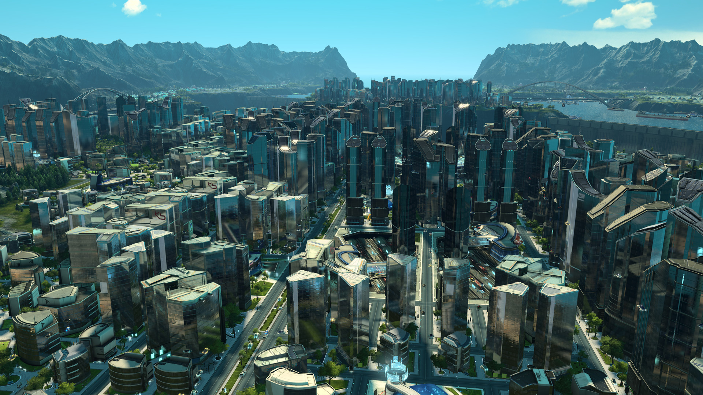

Über das Spiel
Anno 2205 erschien 2015 und bot das bisher größte Bausystem der Reihe. Spieler konnten gigantische Metropolen bauen und gleichzeitig Arktis- sowie Mondbasen verwalten.
Regionensystem
- Gemäßigte Zone – Produktionskern
- Arktis – Energie & seltene Rohstoffe
- Mond – High-Tech-Industrie
Wichtigste Merkmale
- Gigantische Stadtgebiete
- Separate Produktionsnetzwerke
- Sehr futuristische Ästhetik